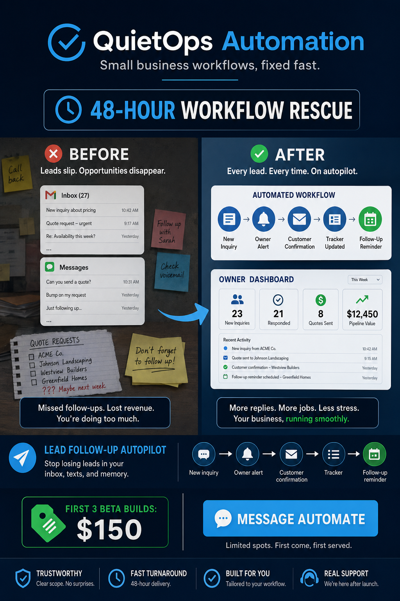

You have a lead. It’s in your inbox, your texts, or your voicemail. Then it’s gone.
You stop losing leads. We build one workflow. 48 hours. $150. No contracts.
48-Hour Lead Follow-Up Rescue · $150 for one workflow

One leak fixed: lead follow-up.
Before QuietOps
- Missed calls and quote requests pile up.
- Emails, texts, and DMs live in different places.
- Follow-up depends on memory and free time.
- Good leads go cold while you are doing the actual work.
After QuietOps
- New inquiries are captured in one tracker.
- You get an owner alert with the important details.
- Customers get a pre-approved confirmation reply.
- Reminders fire if nobody follows up.
Built for busy local service businesses.
Quote requests, package questions, booking follow-up.
Estimate requests, seasonal maintenance leads, recurring follow-up.
Move-out quotes, recurring service inquiries, review requests.
Job requests, details capture, status tracking.
Session inquiries, onboarding, reminders.
Any business where admin work falls through cracks.
What the $150 beta includes
- One workflow mapped and scoped.
- One simple automation built and tested.
- Up to 2–3 connected tools, depending on complexity.
- Customer-facing messages approved by you before launch.
- Simple handoff notes or walkthrough.
- 7 days of bug-fix support for the scoped workflow.
Safe starter scope: no medical/HIPAA, legal, tax/financial advice, payment-card handling, SSNs/government IDs, cold spam systems, large CRM migrations, or full app builds.
Why it feels low-risk.
One workflow. One outcome. No giant mystery project.
Use temporary or limited-permission invites where possible.
Anything customer-facing gets approved before go-live.
Invoice/payment link only after fit and scope are clear.
No fake guarantees. The goal is consistent follow-up.
You get plain-English notes, not a black box.